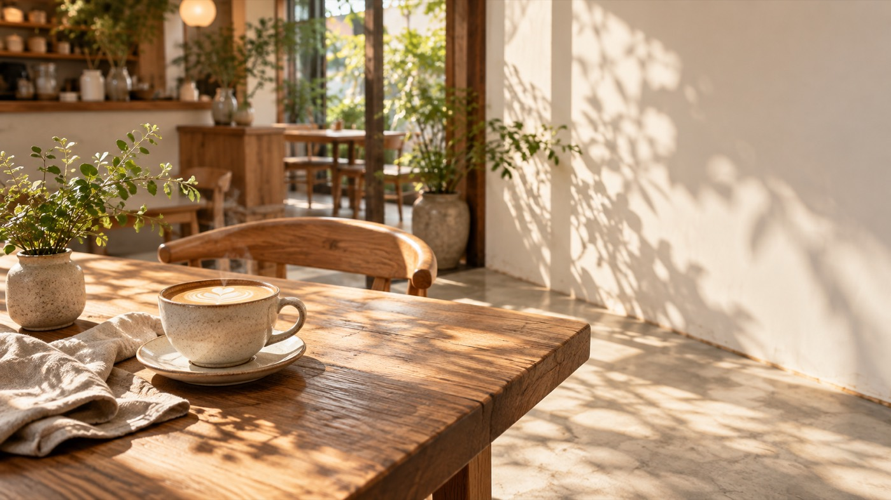
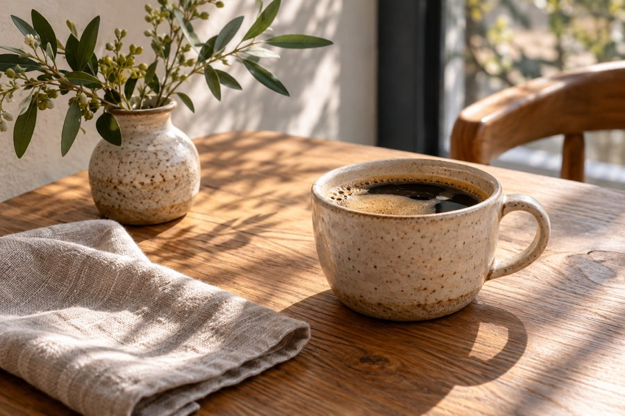

ひなたの季節野菜プレート
1,480円（税込）
季節の野菜を中心に、彩りと食べごたえを楽しむランチプレート。

café hinata
季節の野菜を楽しむランチと、手作りのおやつ。香り豊かな自家焙煎コーヒーとともに、ほっとひと息つきませんか。
東京都町田市のナチュラルカフェを想定した、架空の店舗サイトです。

ABOUT
木の温もりと、窓から差し込むやわらかな光。café hinataは、いつもの一日を少し心地よくするカフェです。ひとりでゆっくり過ごしたい日も、大切な人と話したい日も。季節の味わいとともに、思い思いの時間をお楽しみください。
ひなたの想いを読む →PICK UP MENU
1,480円（税込）
季節の野菜を中心に、彩りと食べごたえを楽しむランチプレート。

650円（税込）
香ばしい焼き色と、なめらかな口どけ。コーヒーにもよく合うひと品です。

500円（税込）
香りと飲みやすさのバランスを大切にした、ひなたの定番ブレンド。
写真はイメージです。
GALLERY
木のテーブル、季節のひと皿、コーヒーのある風景。お店の雰囲気を、写真でご紹介します。

掲載写真は店舗・商品のイメージです。
INFORMATION
東京都町田市を舞台に設定した、架空のナチュラルカフェです。ゆったりとした時間を過ごしていただけるよう、24席の店内を想定しています。